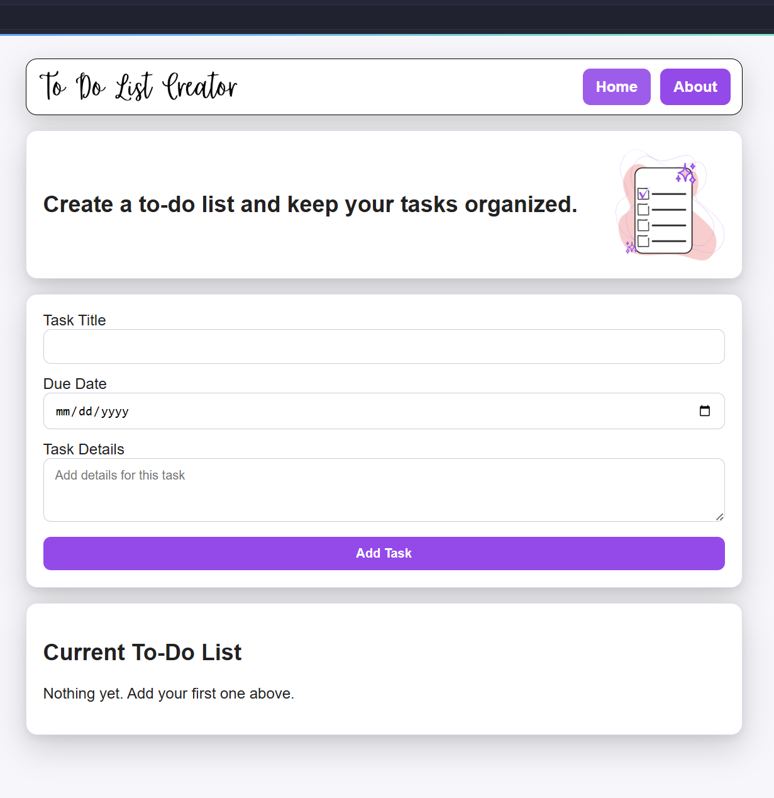
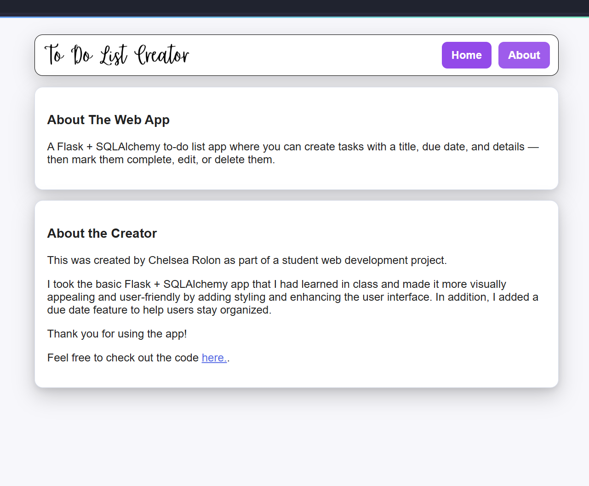

Project Details
To-Do List Creator
A Flask task manager with full CRUD functionality, due dates, completion toggles, and persistent storage through SQLite.
Overview
Created in May of 2026 as part of a Dev course project, this application helps users keep track of tasks in one place. It supports creating, editing, deleting, and marking tasks complete. In addition I added an about page with project description and creator. I also added styling and fields for due dates and details. This includes a simple, mobile-friendly interface and a SQLite database for persistent storage.
Tech Stack
- Backend: Flask
- Database: SQLite + SQLAlchemy
- Frontend: HTML, CSS, Jinja templates
Home Page

About Page
